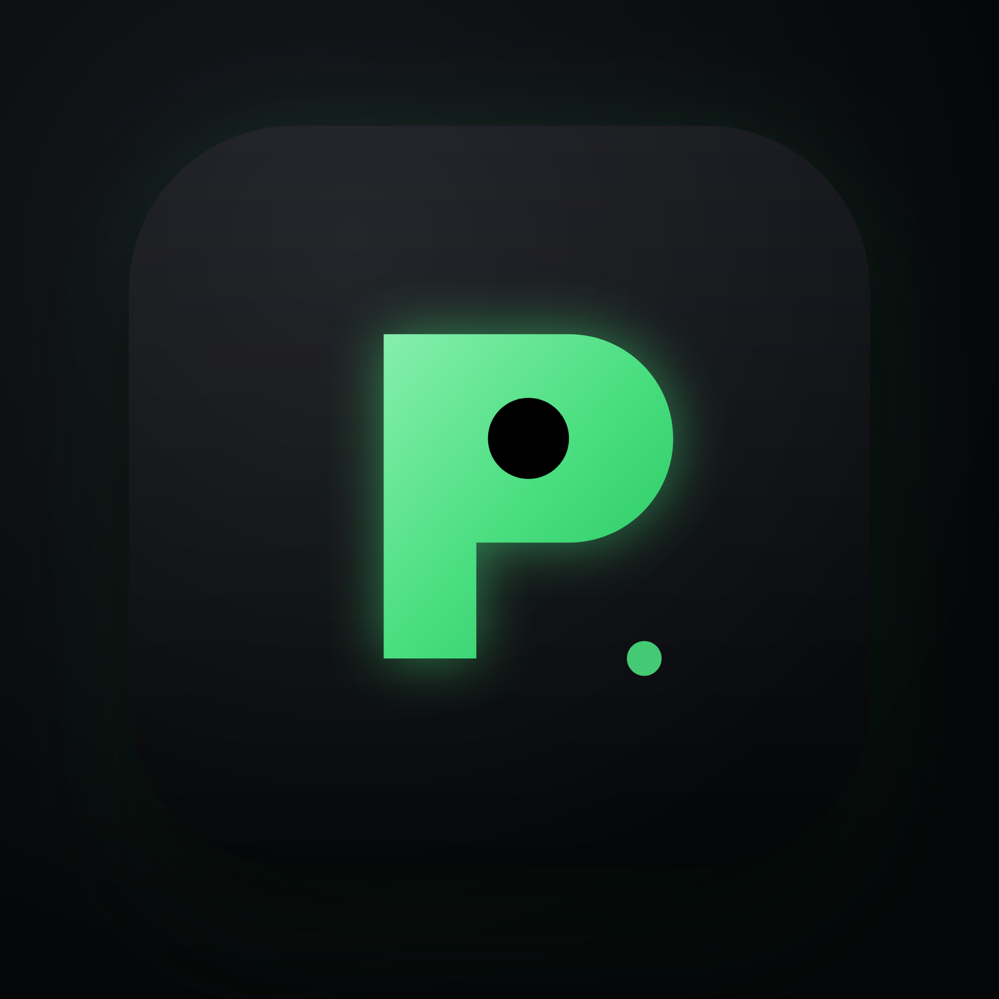

Qodroid
在 Android 手机上运行真实的 Linux 与 Windows 虚拟机
下载 APK
当前版本 2.0.0 · 无需 root · 支持 QEMU 与 AVF 双引擎

在 Android 手机上运行真实的 Linux 与 Windows 虚拟机
Qodroid 是在手机本地跑的完整虚拟机应用，基于 ExTV/Podroid 修改而来。它在 arm64 手机上运行一个真实的 Alpine Linux 虚拟机（自带内核，不是 chroot/proot），也可以启动 x86 的 Windows 虚拟机。应用内置终端、图形桌面查看器与容器管理，开箱即用。
下载并安装 APK → 打开应用 → 点「启动虚拟机」→ 等待 Ready → 打开终端即可使用。所有操作无需 root。
Linux 默认账号 root / podroid（SSH 端口 9922）。
Windows 需要先在应用内选择磁盘镜像，并在 Windows 网卡里把 DNS 设为 8.8.8.8 / 223.5.5.5 以正常上网。
选择磁盘镜像、切换 UEFI/BIOS、打开/关闭 VNC、是否把 VNC 暴露到局域网（默认仅本机 127.0.0.1）。
内置 VNC 查看器，底部快捷键含 DEL / ENTER / WIN（单按弹出开始菜单）/ 方向键 / F 键等。
Windows 启动默认启用 USB 绝对定位指针（usb-tablet），指针不再漂移。
DHCP 分配 IP 后，需要在 Windows 网卡手动设置 DNS（8.8.8.8 / 223.5.5.5）才能解析域名；ping 不通是 slirp 特性，不代表断网。
Qodroid 是基于 ExTV/Podroid 修改的版本，两者均以 GNU GPL v2 发布。完整源代码见仓库，也遵循 GPL v2 条款提供、可修改与再分发。